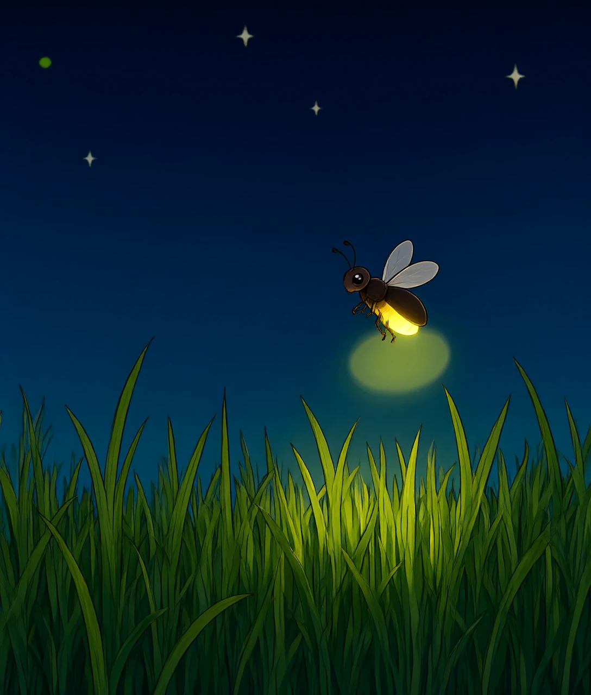
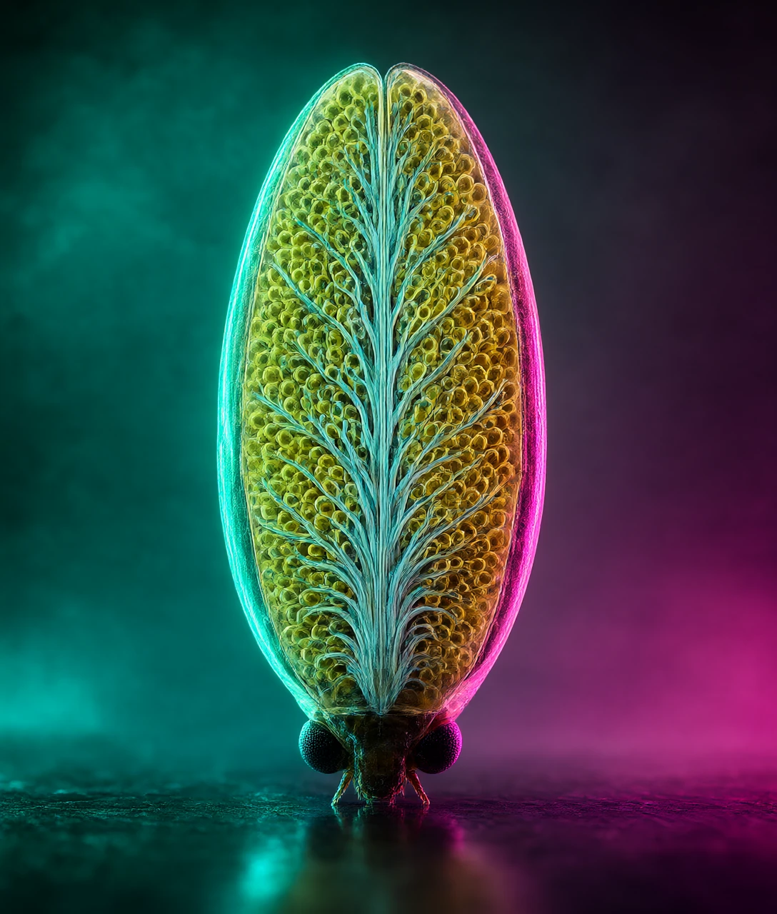
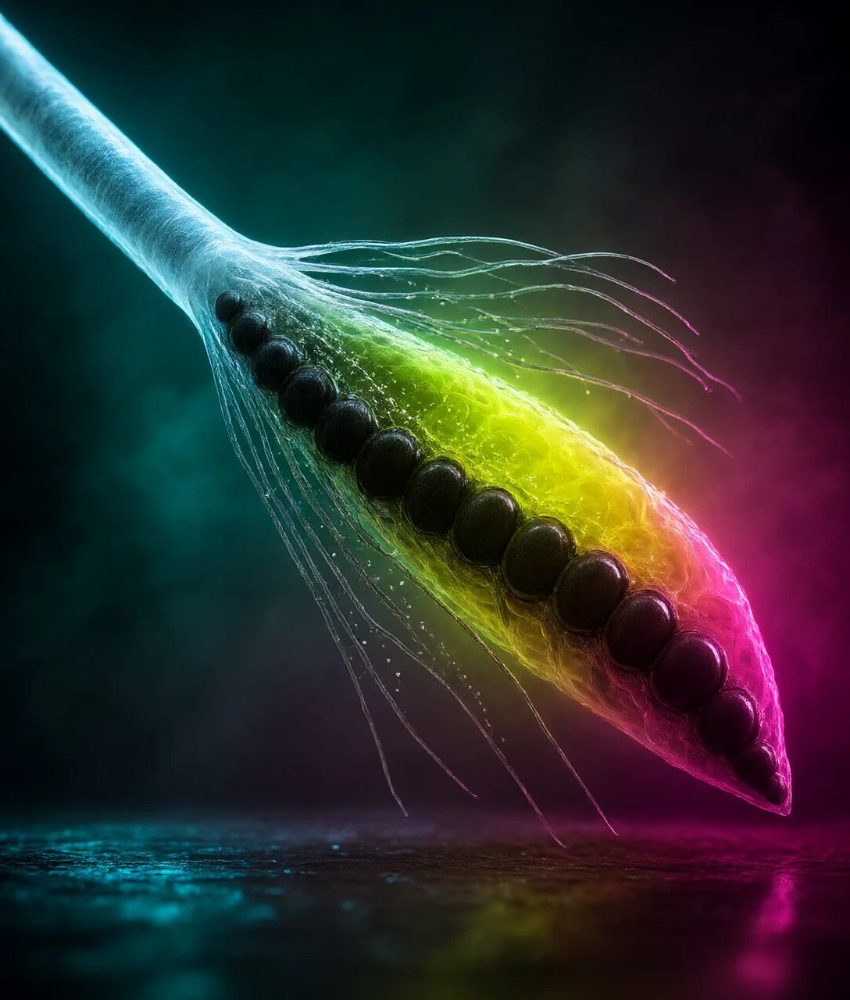
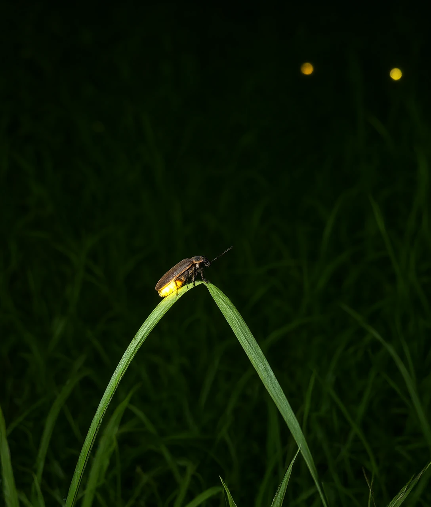

课本上说它的发光效率是 88%，2008 年有人重测了一遍：41%

6 月底，江南的稻田边。日落后四十分钟，天刚黑透，气温还有 26 ℃。
草叶上方浮着一个绿点。它亮一下，暗两秒多，再亮。像有人按着一个很慢的开关。
换算一下：一分钟里，它亮不了三十次。
伸手去接它，指尖不会有温度。这盏灯不烫。
但「不烫」常常被说成「不发热」。这两个说法不一样。
它其实会发热，只是那份热少到你摸不出来。就像冬天的暖手宝，摸着温和，其实一直在放热。
少到什么程度，后面算给你看。
先说这虫子是谁。全世界已知的萤火虫有 2000 多种。
它们不是一种虫，而是一整个科。萤科属于甲虫，翅膀外面盖着硬壳。
中国记录到 100 多种。田里那一只，多半是黄缘萤或者端黑萤。
也不是所有种类都会亮。有些白天活动的种，成虫根本不发光。
所以「萤火虫都会发光」这句话，本身就要打个折。
这一篇讲清三件事：光是怎么造出来的、为什么非要一闪一闪、这些年为什么越来越少见。
灯长在腹部末端。雄虫两节，雌虫一节，里面塞满发光细胞。
细胞就是生物最小的结构单位。发光细胞里有两种关键东西。
一种叫荧光素，它就是燃料。
另一种叫荧光素酶。酶就是一类专门给化学反应加速的东西。
光有这两样还不够。还得有氧气，和一种叫 ATP 的能量分子。
ATP 就是细胞里的现钱。所有要花能量的活儿，都刷它付账。
三样凑齐，反应开始。氧气把荧光素氧化，产物身上多出一份能量。
这份能量撑不住，要甩出去。甩出来的那一小份，就是光子。
光子就是光的最小一份。一份一份攒够，才成为你看见的亮。
这盏灯的颜色，波长在 560 纳米附近。波长就是光的个头。
纳米就是毫米的一百万分之一。560 纳米这个长度，正好落在黄和绿之间。
所以萤火虫的光是黄绿色的。少数种类偏橙，也有偏红的。
接下来是关键的账：一百个燃料分子反应，有几个真的发出了光。
2008 年，东京大学的秋山英文团队把这个数测了出来：41%。
《自然·光子学》登了这篇论文。剩下那将近六成，没有变成光，变成了热。
这个结果当时挺意外。因为在它之前，教科书上写的是 88%。
一次重测，把效率砍掉一半。这就是科学里常有的事。
41% 放在灯里算什么水平？白炽灯约 5%。最好的 LED 约 40% 到 50%。
这里要说明一句：萤火虫的 41% 按分子数算，白炽灯的 5% 按能量算，两者不能严格对比。
一只指甲盖长的虫子，跟我们最好的灯打了个平手。
相当于一个人用算盘，算出了电子计算机的结果。

打个比方。烧柴是整堆一起发热，亮只是顺手跑出来的一点副产品。
萤火虫不是烧。它是让一个分子单独抖一下，把能量精准地甩成一个光子。
真实情况是：精准也不等于百分之百。抖歪的那六成，还是变成热。
只是这份热太少。一次闪光大约抛出 10 万亿个光子。
换算一下：这些光全折成热，也不够让一克水升 0.001 ℃。普通温度计根本读不出来。
所以「冷光」这个词不太准。它不是不热，是热得太少。
那它为什么要一闪一闪，不干脆一直亮着？
发光细胞不是泡在空气里。它挨着一套细管子，叫气管。
气管就是昆虫的呼吸管道。空气顺着管子，直接送到细胞旁边。
氧气从气管渗进发光细胞，反应才能往下走。
所以氧气既是原料，又是刹车。给多少，它说了算。
细胞里还有一种结构，叫线粒体。它是细胞的锅炉房，平时也在烧氧。
线粒体贴着气管那一侧排成一圈，像一排站在门口的人。
平时氧气一进门，就被它们先抢走。发光细胞拿不到。
要发光的时候，神经发一道信号下去。
气管边上的细胞收到信号，放出一氧化氮。这是一种气体，分子式是 NO。
它让线粒体暂停大约 1 毫秒。
这 1 毫秒里没人抢氧。氧气一下涌进发光细胞，灯就亮了。

光一出来，一氧化氮又被分解掉。线粒体恢复抢氧，灯灭。
一亮一灭，一圈一圈转。这个开关，2001 年才被塔夫茨大学的特里默团队找到。
论文发在《科学》上。在那之前，人们只知道反应，不知道谁按开关。
不过这套解释还有争议。有些种类的闪光节奏，用它还讲不全。
打个比方：像地铁闸机口。线粒体是堵在前面的人，一氧化氮是保安。
保安把人拦下一秒钟，后面的队伍才过得去。过了这一秒，闸口又堵上。
光靠开关还不够。还得回答：为什么不常亮。
两个原因。第一，常亮太费。第二，闪本身就是信号，常亮没有信息。
费不费这件事有人量过。闪烁时，萤火虫的耗氧量比静止时高约 40%。
而走动的时候，是高约 60%。也就是说，发光比走路还省一点。
还跟温度有关。天越热，闪得越快；天凉，节奏就慢下来。
这是化学反应的脾气，温度高，反应就快，灯的点灭也跟着快。
那这串闪光，到底是给谁看的？
第一种是相亲。
雄虫飞，边飞边闪。雌虫趴在草叶上，看到节奏对得上，就回一下。
节奏是有讲究的：亮多久、暗多久、飞什么路线，每个种都不一样。
北美有一种常见的萤火虫，雄虫亮 0.2 秒，隔 2.2 秒再来一次。
雌虫大概 0.5 秒之后回应。节奏差一点，她就不理。
这是它们认亲戚的方式。同一个种才用同一套码。
打个比方：一个村子好几种方言，口音不对，门就不开。
第二种是骗。
有一类叫 Photuris 的萤火虫，雌虫会模仿别的种类的回应节奏。
别的种的雄虫以为遇上对象，飞过去，被吃掉。
1975 年，《科学》上有一篇论文专门讲这件事，标题里用了「蛇蝎美人」这个词。
同一盏灯，在相亲的语境里是情话，在捕食的语境里是圈套。
第三种是警告。
萤火虫的卵、幼虫、蛹，都会亮。幼虫的光弱，但整夜不熄。
它白天躲在落叶下面，晚上爬出来找蜗牛，把消化液注进去，再吸。
它体内有一种毒素，叫萤蟾蜍二烯内酯。名字很长，作用很简单：让吃它的动物难受。
有人拿蜥蜴做过实验。蜥蜴吞下萤火虫会吐出来，之后见到发光的虫子就绕开。
所以幼虫那点微光是一块牌子：我有毒，别碰。
三种语言，共用一套器官。上亿年攒下来的本事，现在出了什么问题？

2020 年 2 月，《生物科学》上发了一篇全球评估。
团队问了 350 位萤火虫专家，请他们给本地的威胁排序。
排第一的是栖息地消失。
萤火虫要的是潮湿地：水田、溪边、湿地、红树林，一样都不能少。
马来西亚有一种会同步闪的萤火虫，只住在红树林里。
红树林改成棕榈园和养殖场之后，它的数量掉得很厉害。
排第二的有点意外，是人造光。
全球陆地约 23% 的地方，夜里有人造光。路灯、广告牌、车灯，都比月亮亮。
雌虫要靠那点闪光找雄虫。背景一亮，信号就淹在里面。
有些种类的雌虫，还靠发光把雄虫引过来吃。光一乱，连捕食的节奏都乱。
排第三的是农药。
萤火虫的幼虫期最长两年，成虫只有一到两周。
两年都待在地下或者水下，农药正好洒在这段时间里。
还有一笔账没算清：到底少了多少。
全球大多数种类，没有长期的种群数据。少数有数的，比如马来西亚的同步萤、英国的夜光萤，下降明显。
其他地方多是观察者的零星记录，不成系统。
这也是研究团队自己承认的短板：没有基线，就没法算跌幅。
哪一种真的在降、降得多快，学界目前还没有共识。
那普通人能做什么？其实就三件小事。
院子里少开一盏朝外的灯。草坪上少喷一次杀虫剂。留一小片不修剪的草。
都不是大事。但萤火虫要的本来也不多。
这些办法的前提是水要干净、夜要够黑。缺一样，效果就打折。
回到开头。这盏灯的全部意义，是让另一只看见。
如果我们把夜照亮了，是不是反而让它看不见了？
萤火虫的光摸上去不烫，真正的原因是？
C 解析：一百个燃料分子里约有六十个没发出光，能量变成了热。但一次闪光总共才一万亿个光子，这点热测不出来。
发光反应要凑齐的材料，下面哪一组是对的？
B 解析：燃料是荧光素，加速反应的是荧光素酶，氧化剂是氧气，另外还要一份叫作 ATP 的能量。
一闪一闪的开关，最后落在谁身上？
D 解析：一氧化氮让线粒体暂停抢氧约一毫秒，氧气涌进发光细胞，灯就亮。氧一断，灯就灭。
幼虫整夜亮着那点微光，主要用来做什么？
A 解析：幼虫体内有毒素。实验里蜥蜴吞下后会吐出来，之后见到发光的虫子就绕开。
按 2020 年那份全球评估，排第二的威胁是？
B 解析：专家把栖息地消失排在第一位，人造光排第二，农药第三。背景一亮，雌虫就看不清雄虫的闪光。